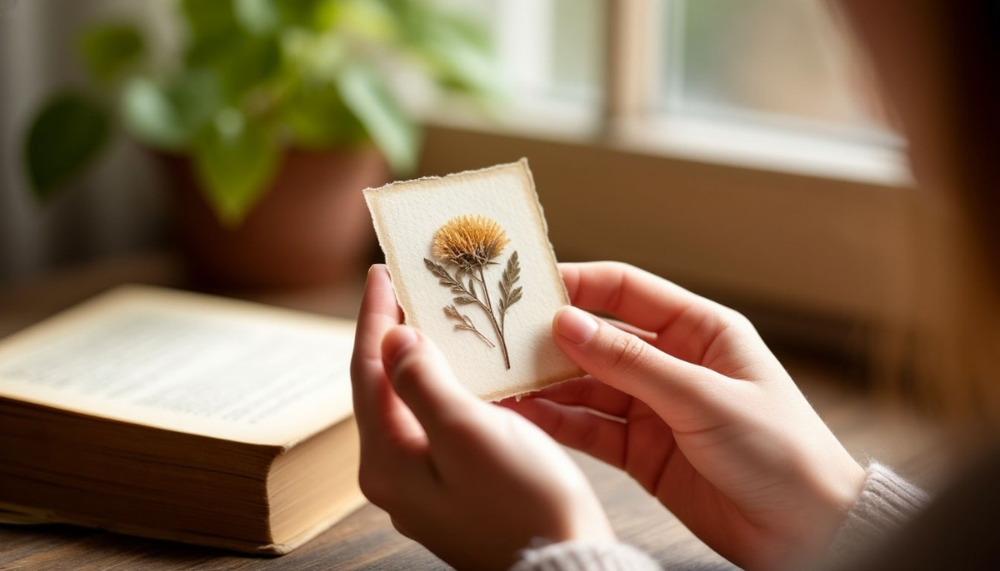

Подарок девушке — это не про вещь. Это про то, что вы о ней думаете. И она это прочитает. Даже если вы выбрали «просто красивое», она всё равно считает послание — только не то, которое вы имели в виду.
Разберёмся, как девушки читают подарки, что работает, а что читается как «мне всё равно», и почему дорогое — не всегда лучшее.
Почему подарок девушке — это не про вещь
Девушки читают подарки иначе, чем парни. И дело не в меркантильности. Дело во внимании.
Психологи, которые изучают отношения, отмечают: для женщины подарок — это в первую очередь сигнал. «Он меня видит? Он помнит, что я говорила? Он вообще думал, когда выбирал?» И дальше — три варианта: «думал», «не думал» или «хотел произвести впечатление деньгами».
Отсюда главное правило. Подарок девушке оценивают не по цене, а по тому, насколько он попал. Дешёвая, но точная вещь работает лучше дорогой и случайной. Потому что точная вещь говорит: «я тебя слышал».

Что подарок говорит о вас
Есть несколько типов подарков, и каждый читается по-своему. Важно понимать, какое сообщение вы отправляете.
Подарок «по списку». Девушка сказала, что хочет что-то — вы купили. Это работает, но читается как «я сделал, что просили». Без магии. Без сюрприза. Без «я думал о тебе».
Подарок «угадал». Вы запомнили, что она говорила полгода назад, и купили именно это. Читается как «я слушал, когда ты говорила». Это сильнее, чем любой дорогой подарок.
Подарок «просто дорого». Бренд, цена, статус. Читается как «я хочу произвести впечатление». Иногда это работает — но чаще оставляет вопрос: «а он вообще знает, что мне нравится?»
Подарок «про нас». Вещь, связанная с вашей историей — с первой встречей, с совместной поездкой, с чем-то, что понятно только вам двоим. Читается как «это про нас». Самый сильный вариант.
Подарок «отписка». Сертификат в магазин, цветы из перехода, что-то «универсальное». Читается как «мне надо было что-то подарить». Это худший вариант, даже если вещь дорогая.
Что работает
Что-то, о чём она говорила. Вы запомнили — и купили. Даже если это мелочь. Даже если она уже забыла, что говорила. Эффект будет сильный.
Что-то для её хобби. Она любит рисовать — скетчбук. Любит готовить — хорошая посуда. Любит читать — книга в её теме. Не «универсальное», а именно её.
Подарок-впечатление. Совместная поездка, мастер-класс, билеты на концерт. Работает, если она ценит опыт больше вещей. И если вы идёте вместе.
Что-то с гравировкой. Дата, имя, фраза. Читается как «это только наше». Особенно если вы вместе недавно — это знак серьёзности.
Что-то «для неё», а не «для дома». Плед, свеча, посуда — это хорошо, но это «для дома». А ей хочется что-то «для себя». Парфюм, украшение, книга, косметика — это про неё лично.
Что не работает
Носки, полотенца, бытовая техника. Это «покупка», а не подарок. Если хотите подарить что-то полезное — добавьте к этому что-то «для души».
Слишком дорогое без объяснения. Если вы дарите дорогое, но не объясняете, почему именно это — она может почувствовать давление. «Он столько потратил, я теперь должна».
Что-то «исправляющее». Тренажёр, книга «как стать лучше», средство для похудения. Это оскорбление, а не забота.
Что-то «для себя». Планшет «чтобы мы вместе играли», но играете вы. Или что-то, что вы давно хотели. Она это почувствует.
Сертификат «на всякий случай». Если вы не думали — вы даёте сертификат. Это честно, но не работает. Лучше спросить и купить точное.
Что сказать, когда вручаете
Девушке важны слова. Не длинные, не пафосные. Но обязательно — почему именно это.
«Я выбрал это, потому что помню, как ты говорила, что мечтаешь о таком».
«Это не дорого. Но это про тебя».
«Я хотел подарить тебе что-то, что ты будешь носить и вспоминать обо мне».
«Это наша история. Начало».
Одна фраза — и подарок перестаёт быть «вещью». Он становится посланием.
Вместо итога
Подарок девушке — это не про угадывание. Это про внимание. Про то, что вы заметили, как она живёт, что ей нравится, о чём она говорит. И встроились в эту жизнь чем-то маленьким, но точным.
Мой друг однажды подарил девушке на первый месяц знакомства простую открытку — с фотографией места, где они встретились. Не дорого. Не брендово. Но она хранит её до сих пор — уже пять лет. Потому что он сказал: «Это место, где началось что-то важное».
Подарок не измеряется в рублях. Он измеряется во внимании. И девушки это чувствуют лучше всех.